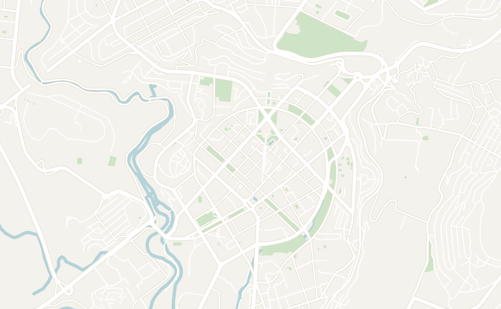
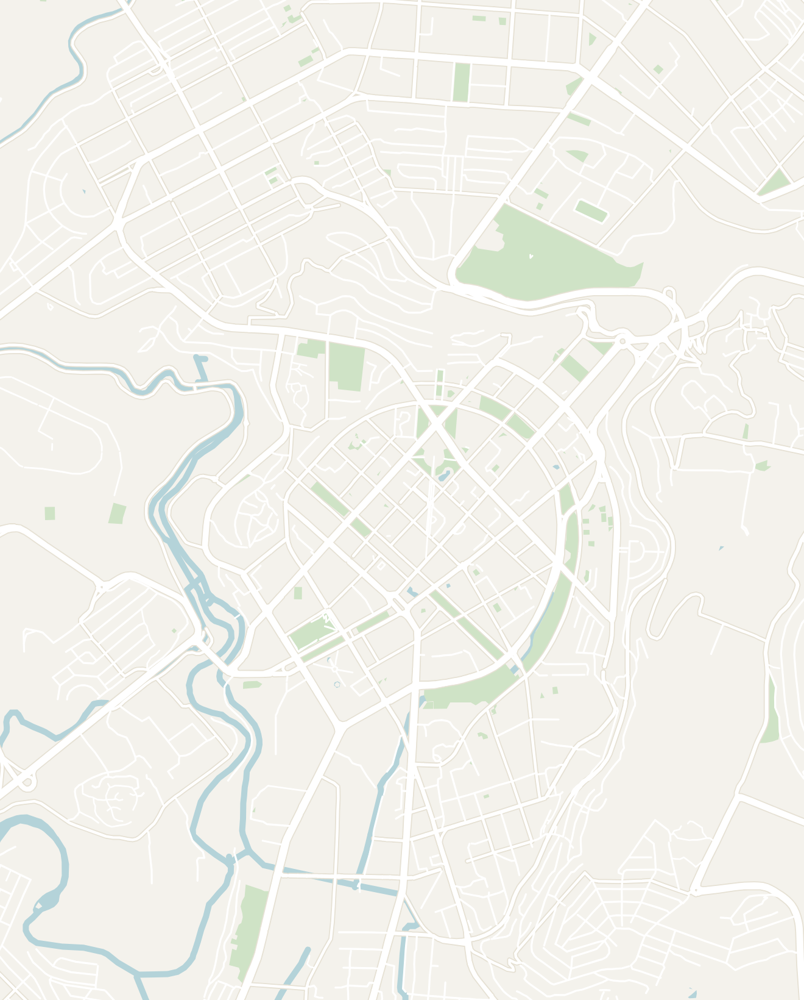
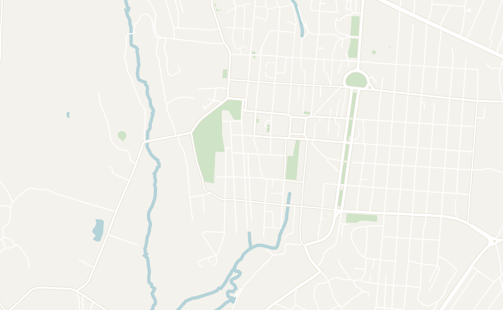
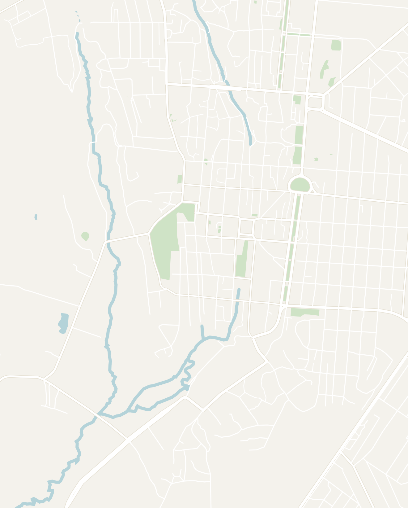

General
- Armenia is a super underrated destination. It has a rich culture that is a unique mix of ancient biblical history and more modern Soviet influences. I found the history both fascinating and dark with the impact of the Armenian Genocide and the recent war with Azerbaijan present in the country. It is a very affordable country that was easy to navigate and no attraction felt overrun by tourists. A trip to Armenia is easily combined with a trip to Georgia as well
- The country is a mix of contrasts. The large cities like Yerevan (the capital) or Gyumri are very clean and modern. However, as you leave the cities, the countryside is noticeably poorer and more Soviet. The nature in Armenia is very beautiful. The country has a mix of snow-capped mountains and drier landscapes as you get further south toward Iran
Suggested Route Overview
- Safety — I felt very safe in Armenia and it is rated one of the safest countries in terms of petty crime. The only concerns to watch out for are conflicts with neighboring countries as they have tense relations with Türkiye and Azerbaijan with a recent war in 2023
- Transport
- Ridesharing apps are widely available. Use Yandex or the GG app (Armenian Uber) for getting around. You may have to pay with cash, but both work great. The rides were insanely cheap, ranging from $2–5 to get around the city
- Buses and metro — I had issues paying with a foreign card and the networks aren't very extensive
- Marshrutka — A network of informal vans that will help you get around Armenia. There are stations in almost every city. Yerevan is very well connected and this is a great option for day trips. Tickets were as cheap as $2 for a 3-hour ride
- Renting a car is a great option. Car rentals were pretty cheap, the roads are beautiful and easy to navigate
- Language — Most Armenians speak Russian as a second language, even greeting you with Здравствуйте (Zdravstvuyte) — knowing a few words of Russian goes a long way. Younger Armenians speak English, particularly in big cities. Even if there was a language barrier, I found Armenians to be extremely helpful
- Cash — Armenia uses the Armenian Dram. Credit cards are widely accepted in Yerevan, but always carry cash, especially outside of major cities
What to Eat
- In general, Armenian food is similar to Turkish food with different influences from Persian and Georgian cuisine
- Manti — baked little dumplings that are crunchy on top and served in tomato and yogurt sauce. Different than Turkish Manti
- Lahmajun — thin flatbread with spiced lamb — known as the national dish of Armenia
- Lavash — Armenian flatbread cooked in an underground oven, served with every meal
- Salads — super fresh with a variety of lettuce, beans and tomatoes
- Khorovats — Shish Kebabs — pretty similar to Persian barbeque
Yerevan
2–3 days recommended- The Cascade Complex — a massive Soviet-era staircase with modern art sculptures scattered throughout. Go in the mornings to see Mt. Ararat (the national symbol of Armenia) from the top. The snow-capped peaks looming over the city are genuinely magical
- Republic Square — the main square with beautiful pink/red sandstone Soviet buildings and a nightly fountain light show around 9pm in summer. They play classical music and shoot water like fireworks for 30 minutes. The National Gallery of Armenia is also located here
- Free walking tours — I highly recommend doing one. Our guide did a great job explaining Armenian history, Soviet legacy, the genocide, and the current geopolitical situation. Very informative and there was even a stop to try local foods
- Armenian Genocide Museum — located on a hill overlooking the city. One of the most important stops in Yerevan. There is a museum and eternal flame — sobering, but really important. Plan for an afternoon
- GUM Market — the main indoor market, popular among locals. Sells dried fruits, cognac, vegetables and meat. Try Sujukh — an Armenian candy made of fruit juice and walnuts
- Vernissage Market — outdoor souvenir market, better on weekends when it's fully open. I preferred GUM Market which felt more authentic
- Blue Mosque — the only mosque in the entire country. Gorgeous bright blue dome similar to mosques in Iran and Central Asia. Worth a quick visit
- Mother Armenia — huge bronze statue in Victory Park, surrounded by Soviet military equipment (tanks, jets, missiles). There is a great view of the city below
- Kond Neighborhood — the oldest neighborhood in Yerevan, pretty rundown in contrast to the rest of the city. Stop by the family-run Kond.House Coffee and the Kond Pedestrian Tunnel
- Ararat Brandy Factory — Armenians are famous for their brandy and this factory offers tasting tours
Where to Eat
- Yerevan Tavern — probably my favorite restaurant. Wide variety of classic Armenian food with live music every night
- Mayrig Yerevan — the fanciest restaurant I went to. The Armenian Manti is baked (not boiled like Turkish) and served with tomato sauce and sour cream. Amazing
- Anteb Restaurant — known for Western Armenian cuisine. Get the Lahmajun, Zaatar bread and sour lemon dumpling soup
- Tumanyan Bakery — a local Armenian-style bakery
- Lumen Coffee 1936 — a hip coffee shop embedded in a historic building
- AfroLab Specialty Coffee Roastery — modern coffee shop with a really good cold brew
Where to Stay
- Kantar Hostel — a newer hostel near Republic Square with a great free breakfast buffet. Not particularly social from my experience
- YellowFox Hostel — a family-run hostel. Pretty basic, I preferred Kantar

ATTRACTIONS
1The Cascade Complex
2Republic Square
3National Gallery of Armenia
4Armenian Genocide Museum
5Vernissage Market
6Blue Mosque
7Mother Armenia Monument
8Kond Neighborhood
9Yerevan Brandy Factory
RESTAURANTS & BARS
10Yerevan Tavern
11Mayrig Yerevan
12Anteb Restaurant
13Tumanyan Bakery
14Lumen Coffee 1936
15AfroLab Specialty Coffee
ACCOMMODATION
16Kantar Hostel
DAY TRIPS
↗Khor Virap Monastery (Half Day)
↗Geghard & Garni (Full Day)
↗Lake Sevan (Full Day)

ARMENIA
Yerevan
Touch to explore
Double-tap to open in Google Maps
Double-tap to open in Google Maps
Day Trips from Yerevan
- Organized tours are very cheap ranging from $15–30 for a full day. You can also reach most destinations by rental car or Marshrutka
- Orgov Space Telescope (ROT-45) — my favorite thing in Armenia. An abandoned Soviet-era radio telescope complex in the middle of nowhere. Incredible control room with pastel murals and old Soviet controls, plus a massive satellite dish to climb. You technically need a government permit but can pay the guys at the gate ~2,000 AMD each. Basically no other tourists. Do not skip this
- The next 4 were all part of a day tour (link here) — highly recommended for seeing the most popular sites in one day
- Khor Virap Monastery — one of the oldest monasteries in the world with Mt. Ararat directly behind it. The contrast of the dark interior with a beam of light cutting through is beautiful. An important reason why Armenia became the first Christian nation
- Geghard Monastery — half building, half cave carved into the hillside. One of the most sacred spots in Armenia and tied to early biblical history
- Garni Temple — pagan temple from 77 AD that looks like a mini Acropolis perched on a cliff. Survived the conversion to Christianity as a unique example of early Armenian pre-Christian beliefs
- Symphony of Stones — a natural river valley surrounded by hexagonal columns formed by cooling lava, standing over 5–6 stories tall. Hidden in a gorgeous green valley with a river running through it
- Lake Sevan — the most famous lake in Armenia, stunning blue water with mountains all around. Stop at Sevanavank Monastery on the hill for the view
- Abandoned Soviet Plane — a Tu-134A sitting by a random lake. You can climb on top if you're feeling adventurous
- Black Wall — a hidden abandoned mine site under grassy hills. Very off the beaten path with no signs or tourists. The surroundings are beautiful, but it's not worth going out of your way
Gyumri
1–2 days recommendedGeneral
- Gyumri is Armenia's second largest city and well worth a day trip or overnight. Only 2.5 hours by Marshrutka from Yerevan (~$4). Take the Marshrutka from the central train station parking lot, not the bus stop. It leaves when full so expect a short wait
- Known as the "black city" for its characteristic black and orange stone architecture. The downtown was heavily damaged in a 1988 earthquake and some buildings are still not fully rebuilt, but the center is gorgeous and newly renovated
What to Do
- Vardanants Square — the main square with a large rectangular fountain, white marble walkway and willows. At the end is a brutalist genocide memorial and the St. All Saviors Church in beautiful black and orange stone
- Abovyan Street & Rijkov Walking Street — popular walking streets with gorgeous black stone buildings. The black stone is a more traditional Armenian architectural style than Yerevan
- Cathedral of the Holy Mother of God — probably the most beautiful spot in Gyumri. Classic black Armenian church with an enormous yard full of white blossoming trees
- Mother Armenia of Gyumri — slightly outside the city center, another Mother Armenia statue that is arguably better looking. There is a long walkway lined with stones from major Soviet cities. Don't miss the WWII memorial with an eternal flame
- Black Circular Fortress — a medieval-feeling circular fortress with black walls, gold trim balconies and red curtains. Only worth visiting if you're already by the Mother Armenia statue
- Gyumri Market — an open-air market where locals sell produce, meat, fish and spices
Where to Eat
- KTOR M — an underground restaurant near the main square. Get the Khurjin (meat, cheese and mushrooms wrapped in lavash tied in a knot)


ARMENIA
Gyumri
Touch to explore
Double-tap to open in Google Maps
Double-tap to open in Google Maps
Other Places to Consider
- Tatev — recommended by my walking tour guide as the most beautiful region in Armenia. Famous Tatev Monastery and great hiking. 8 hours from Yerevan — worth spending more than a day
- Dilijan — a small classic village near Lake Sevan. I've heard mixed reviews
- Alaverdi — a small old Soviet mining town on the border with Georgia. Popular stop on the way from Georgia for monasteries or people interested in abandoned Soviet factories